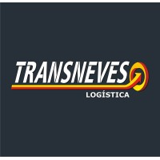
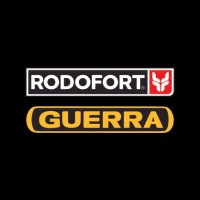
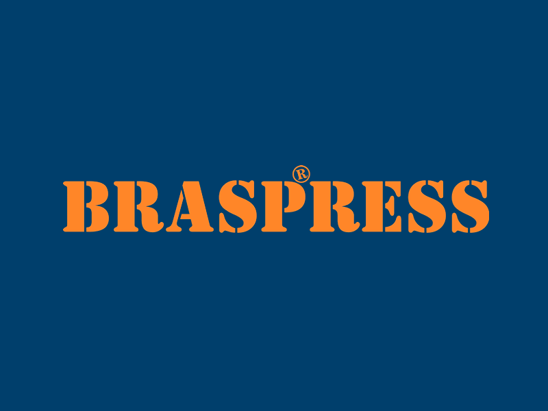

Transneves
Oferecemos soluções no segmento de transporte de cargas em geral, seja normal, especial ou indivisível, em todo território nacional, dispondo de uma excelente estrutura física e operacional.
Como operador nacional logístico e transportador rodoviário de cargas, temos como meta atender o cliente integrando qualidade, confiabilidade e excelência em nossos serviços de transporte.

Rodoforte
Trazemos um olhar sedento por inovação, fé e esperança, para encontrar maneiras cada vez mais seguras e modernas de continuarmos cruzando as estradas da vida. A sabedoria e a garra, que carregamos de nossas origens, aliou-se à uma velocidade intensa em sermos a marca de implementos rodoviários que está no seu coração. Chegou a hora de duas grandes marcas rodarem juntas pelas estradas brasileiras. A bagagem de Rodofort e Guerra, agora, é compartilhada; a carga preciosa se traduz em mais experiência e tradição, dando carona para a inovação e a certeza de uma linha de produtos cada vez mais robusta e adaptada aos novos tempos.

BRASPRESS
Empresa líder no Brasil no transporte de encomendas, a BRASPRESS é a única do setor que atende todo o território nacional com uma frota própria de 2.890 veículos. São mais de 9 mil colaboradores diretos e ainda 3 mil terceirizados em regime diário, distribuídos em 114 filiais próprias pelo país.
Criada em 1977, pelo empreendedor Urubatan Helou, e pelo sócio e amigo Milton Petri; a BRASPRESS tem como diferenciais a adoção de um modelo de negócio que envolve investimentos pesados em inovação tecnológica, busca constante pela eficiência e excelência na prestação de serviços, além da operação capilar em todo o Brasil.

FedEx
Ligar pessoas, bens, serviços e ideias cria oportunidades e melhora vidas. Na FedEx, acreditamos que um mundo conectado é um mundo melhor e essa premissa orienta tudo o que fazemos.